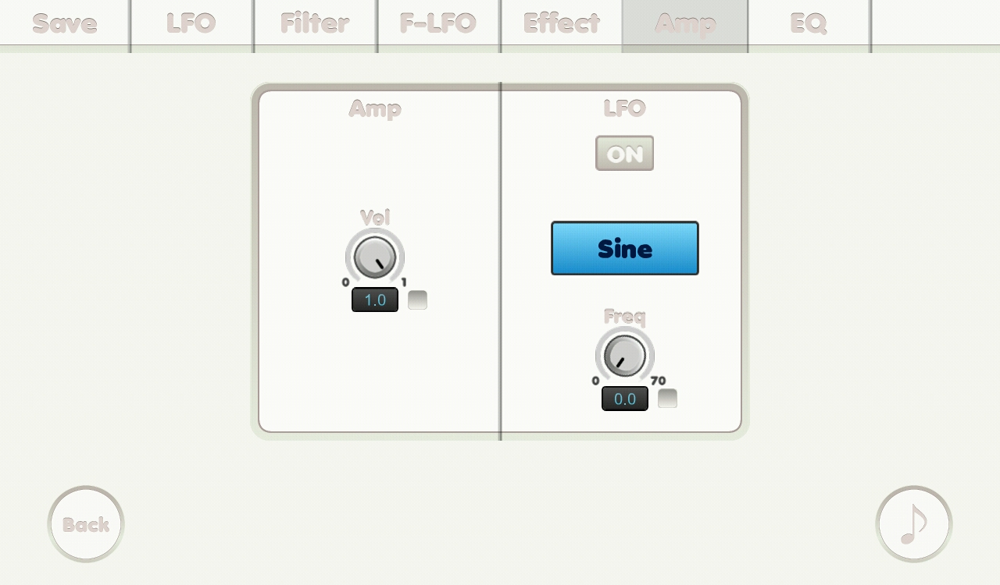

{% include JB/setup %}
Amplifier screen

- Volume knob: volume.
- ON button: to turn the LFO on.
- Wave shapes
- Sine wave
- Sawtooth wave
- Square wave
- Triangle wave
- Frequency knob: frequency.
- Check boxes: if it was checked its related number is affected by mutate feature.